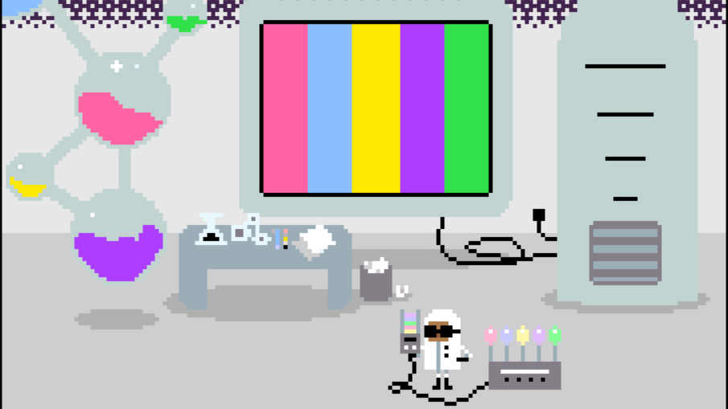
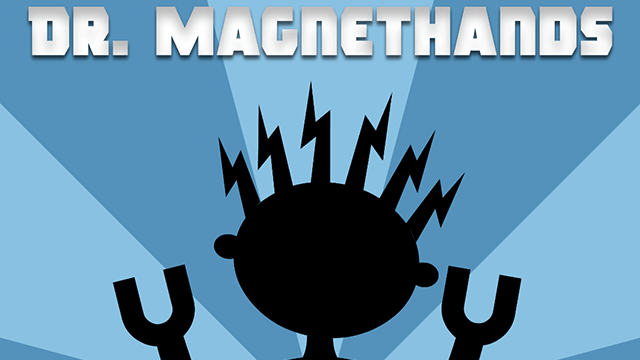

Games
I currently develop games independently under the Inverted Productions label, but I have been designing and developing games since I was little.
Video Games - Complete (or “Complete”)
-
Workshop Scramble
Help the elves in Santa's workshop build toys for kids -

Color Blind
Help Dr. Chroma repair the Chroma Force. Winner of BrickHack II Best Design. -


Hack, Slash & Backstab
Where the dungeon is dark, and your friends aren't friendly -


Dr. Magnethands
An RPG for three or more drunk people -

Legitimate Tower Defense
Legitimately defend towers from ridiculous falling objects. -

Martha Madison
Teaching physical science through a puzzle-platformer
Video Games - WIP or proof-of-concept
-
Banana Split
A sweet twist of third-person shooting and real-time strategy flavors -


TetrEscape
Room escape meets block-pushing puzzles meets Tetris
-
Project Awake
A ontological mystery visual novel about a pair of siblings who find themselves trapped in different parts of a hospital after a car crash. Currently on the back burner.
-
[Untitled Project]
An interactive narrative about a community doing their best to keep on keeping on years after an apocalyptic war they only survived thanks to a bit of divine intervention. Currently on the back burner.
-
Cartesian Catch
An educational game about using functions on graphs to catch and roll eggs back to their nests. Currently in development.
-
Unitris
A educational block-based puzzle game that teaches the basics of unit conversion. Currently shelved.
Video Game Maps
Analog Games
-
Cheating Death
Delay the inevitable with 3-6 players -

STARs Against Humanity
Unofficial sci-fi expansion for Cards Against Humanity
-
Hexagons
Card game
A single-player card game in which the player attempts to uncover and claim as many cards as possible around the sides of two hexagons. The full rules can be found on this Google Doc.
-
Twilight Princess Monopoly
Board game
The game of Monopoly given a meticulous visual redesign based on The Legend Of Zelda: Twilight Princess. All character tokens, properties, and cards have been rewritten with locations and events from Twilight Princess.
Board and cards may be uploaded at a later date.
Tiny Bits
They may not be deep, and you may debate whether they are fully games, but sometimes you just feel like making something.
-
Rainbow Hustlers
A web port of a popular LOGO game from a tech. camp I used to teach at. Take control of one of the shapes, and leave rainbow trails across the screen.
-
Right Vs. Happy: The Game
Do you want to be right, or do you want to be happy? This game is the result of a joking conversation with some of the HSB team about team dynamics, decision-making, and compromise. It is also my only game that definitely runs on PC, mobile, and Wii U.